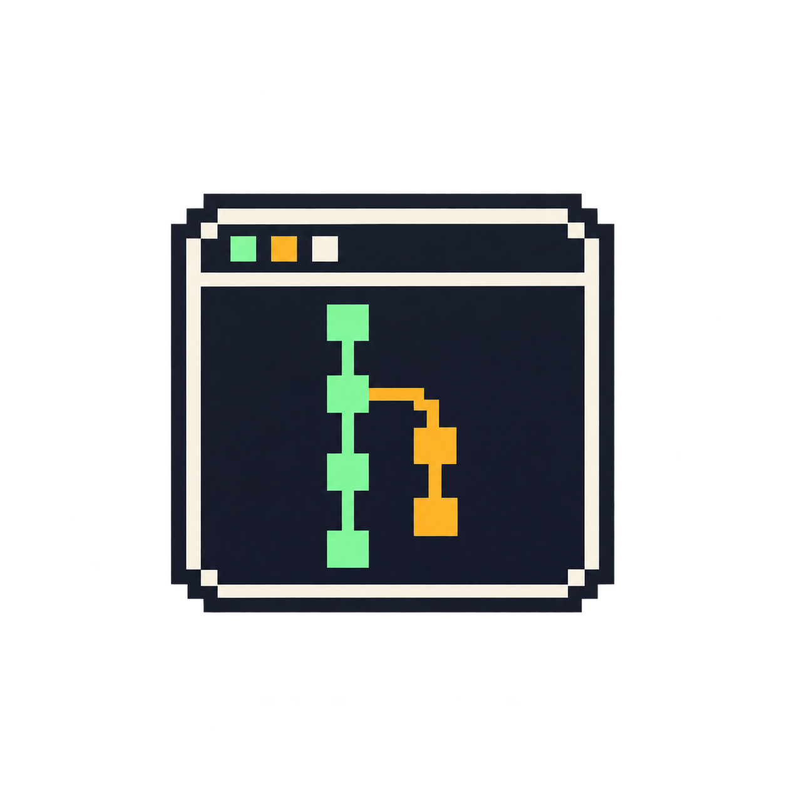
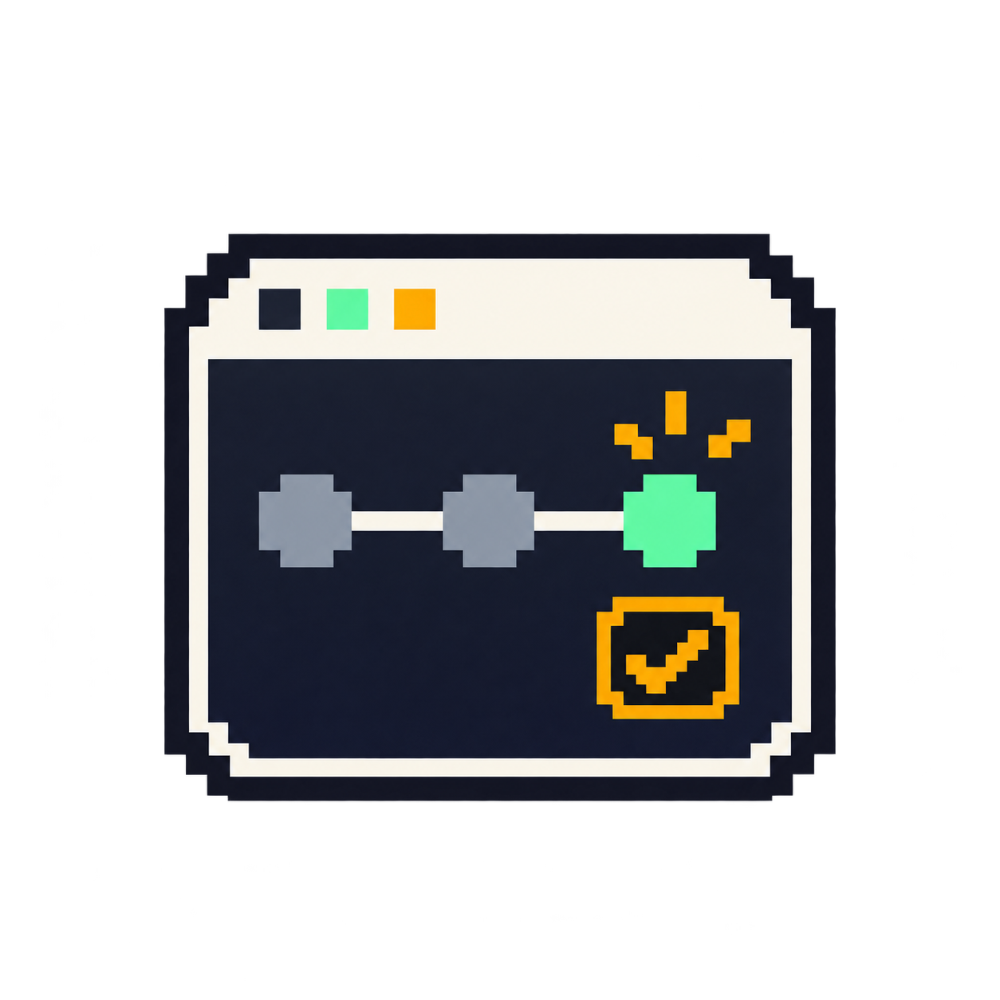
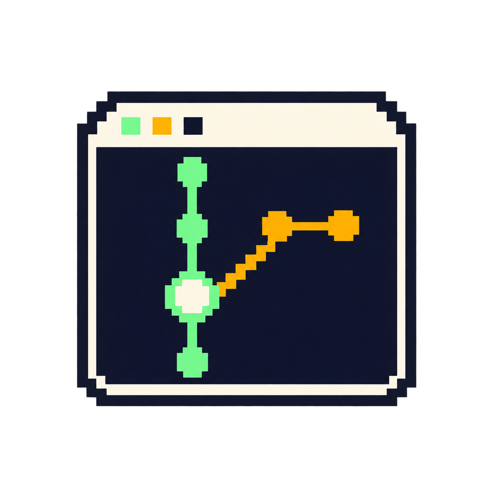

工作目錄
此刻正在編輯的檔案。
零基礎入門 · Windows PowerShell
依箭頭學習，或點任一節點查看先備條件、操作與完成檢查。

開始使用 Git
先備條件是能在 Windows 安裝軟體。安裝 Git for Windows 後，開一個新的 PowerShell 視窗。
git --version
git config --global user.name (Read-Host 'Commit name')
git config --global user.email (Read-Host 'Commit email')
git config --global --get user.name
git config --global --get user.email終端機印出 Git 版本，最後兩行顯示提交姓名和信箱。若已設定身分，可用最後兩行核對。
用來授權遠端操作。先在網頁登入，推送時若出現 Git Credential Manager，再依提示授權。
本機工作流程
先備條件是 PowerShell 已能執行 Git，且已設定提交身分。
此刻正在編輯的檔案。
git add→
已選入下一次提交的內容。
git commit→
已記錄的提交與歷史。
用 git status 確認進度。 暫存後再編輯檔案，新改動會先留在工作目錄。
本機練習 · 暫存
在能建立新資料夾的位置，使用全新的 git-local-practice 練習。
New-Item -ItemType Directory git-local-practice
Set-Location git-local-practice
git init -b main
Set-Content -LiteralPath notes.txt -Value 'Topic: Git'
git status --short
git add -- notes.txt
Set-Content -LiteralPath notes.txt -Value 'Topic: My first Git commit'
git status --short
git --no-pager diff -- notes.txt
git --no-pager diff --staged -- notes.txt?? notes.txt檔案剛建立，Git 尚未追蹤。
AM notes.txt暫存區已有新增的檔案，工作目錄還有後續修改。
diff 看尚未暫存的修改，diff --staged 看即將提交的差異。
本機練習 · 提交
把最新內容再次加入暫存區，再用一句話說明這次變更。
git add -- notes.txt
git commit -m "Add Git practice notes"
git status --short
git --no-pager log -1 --oneline狀態應無輸出，歷史應顯示 Add Git practice notes。

本機練習 · 快轉合併
先備條件是已在 git-local-practice 完成第一筆提交 A。圖由左到右讀，接下來會在新分支新增提交 B。
合併前 · main 指向 A，practice/add-checklist 指向 B。B 接在 A 後面。
合併後 · 採用預設快轉行為時，main 從 A 移到 B，兩個分支都指向 B，歷史仍只有 A 和 B。
下一步 · 建立分支並操作合併。最後在 main 驗證新檔案。
本機練習 · 分支與合併
分支會隨著你在該分支提交而向前移動。合併前，先切到要接收變更的分支。
git switch -c practice/add-checklist
git branch --show-current
Set-Content -LiteralPath checklist.txt -Value '- Learn to make a commit'
git add -- checklist.txt
git commit -m "Add a Git practice checklist"
git switch main
git merge practice/add-checklist
Get-Content -LiteralPath checklist.txt
本例的 main 可以直接移到新提交。合併後，main 也讀得到 checklist.txt。
本機練習 · 分歧歷史
先備條件是已做完本機分支練習，並回到 main。接下來會從同一筆提交往兩邊修改 notes.txt 的同一行。
解決前 · B 與 C 都從 A 分歧。本例兩邊改到同一行，Git 暫停合併，等你選定要保留的內容。
解決後 · 修正、暫存並提交後，main 指向合併提交 M。M 有 B 與 C 兩個父提交。
下一步 · 製造衝突，觀察 UU notes.txt，再完成合併。
本機練習 · 製造衝突
沿用本機練習的 main。讓兩邊各自改寫 notes.txt，看 Git 怎麼回報衝突。
git switch -c practice/change-topic
Set-Content -LiteralPath notes.txt -Value 'Topic: Learning branches'
git add -- notes.txt
git commit -m "Describe branches in the notes"
git switch main
Set-Content -LiteralPath notes.txt -Value 'Topic: Learning merges'
git add -- notes.txt
git commit -m "Describe merges in the notes"
git merge practice/change-topic
git status --short
Get-Content -LiteralPath notes.txtUU notes.txtGit 暫停合併，等待你決定保留哪些內容。
<<<<<<< HEAD
Topic: Learning merges
=======
Topic: Learning branches
>>>>>>> practice/change-topic本機練習 · 完成合併
這個練習檔只有一行。讀過兩個版本後，把它改成涵蓋兩邊內容的句子。
Set-Content -LiteralPath notes.txt -Value 'Topic: Learning branches and merges'
git add -- notes.txt
git commit -m "Resolve notes topic merge conflict"
git status --short
git --no-pager log -4 --oneline --graph狀態無輸出，歷史裡可以看到合併提交。
仍在合併中時，可用 git merge --abort 回到合併前。
本機與 GitHub
接下來另建 GitHub 練習儲存庫 git-pr-practice。複製時，Git 通常會把來源命名為 origin。
git clonegit remote -vgit fetch origingit pullgit push -u origin …PR 實作 · 準備分支
先備條件是已登入 GitHub 並設定 Git 提交身分。這個練習使用新的 git-pr-practice，可以設為私人。
$repoUrl = Read-Host 'GitHub HTTPS URL'
git clone $repoUrl git-pr-practice
Set-Location git-pr-practice
git remote -v
git branch --show-currentgit switch -c practice/add-notes
git branch --show-current確認 origin 指向自己的儲存庫，並在新建分支前記下預設分支名稱。
PR 實作 · 提交與推送
確認目前在 practice/add-notes，再新增 notes.txt。
Set-Content -LiteralPath notes.txt -Value 'I created my first pull request.'
git add -- notes.txt
git --no-pager diff --staged -- notes.txt
git commit -m "Add first PR practice notes"
git push -u origin practice/add-notes
git status --short --branch差異應只包含這次新增的文字。
狀態應顯示分支追蹤 origin/practice/add-notes。如果認證失敗，先核對 origin 和登入帳號。
PR 實作 · GitHub 網頁
先備條件是 GitHub 上看得到你推送的 practice/add-notes。
practice/add-notespractice/add-notes。notes.txt。保留 PR 網址作為練習結果。